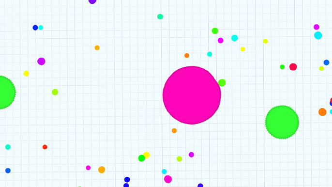
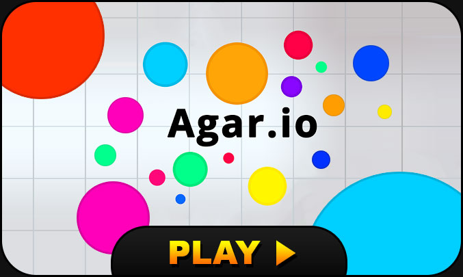
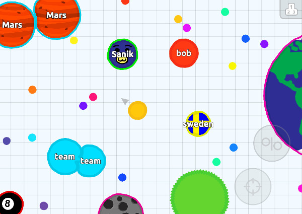

Introduction
Aggie.io is a free, browser‑based collaborative drawing canvas that lets multiple players create artwork together in real time. Unlike most drawing apps, it requires no account or download—just open the URL, create a new canvas, and share the link. Its clean interface offers layers, a variety of brushes, a color picker, and basic editing tools, making it perfect for fast‑paced Pictionary‑style games. Because updates are live, everyone sees strokes appear instantly, creating a lively, communal experience that feels like a digital whiteboard. Whether you're sketching a secret word for friends to guess or racing to identify a teammate's scribble, Aggie.io provides the speed, simplicity, and flexibility that players love.
Getting Started

1. Open https://aggie.io in any modern browser. Click the bright "New Canvas" button; a fresh blank sheet appears instantly. 2. Share the canvas link by clicking the "Share" icon and copying the URL. Send this link to your friends through chat, Discord, or any messaging app. 3. Once everyone joins, decide who will be the drawer for the first round. The drawer can secretly pick a word from a pre‑made list or have a host whisper it. 4. To start drawing, select the Brush tool (default) and adjust size and color using the sliders on the left toolbar. Use the Layers panel (top right) to add a new layer for sketch lines, keeping the final line work on a separate layer. 5. During the round, guessers type their guesses in a separate chat window (Aggie.io does not include built‑in chat, so use an external platform). The drawer can also use the Undo button (Ctrl+Z) to fix mistakes. 6. When time runs out or a correct guess is made, click "Clear" (or the trash icon) to wipe the canvas for the next round. Repeat steps 3‑5.
Basic Tips
1. Leverage Layers for Clean Artwork – Add a new layer for your initial sketch (e.g., "Sketch") and another for the final line work ("Lineart"). This way you can hide the sketch layer when you’re ready to color, keeping the canvas tidy. 2. Choose the Right Brush Size – Use a large brush (size 20‑30) for fast background fills, then switch to a small brush (size 2‑5) for fine details like eyes or text. 3. Master the Color Picker – Click the color swatch, enter a hex code (like #FF5733) for exact brand colors, or use the eyedropper tool to sample a color from an existing part of the canvas. 4. Use Keyboard Shortcuts – Press Ctrl+Z to undo a stray stroke, Ctrl+Y to redo, and Space+drag to pan when you need to move around the canvas without switching tools. 5. Export Your Masterpiece – Click the download icon to save the canvas as a PNG, so you can keep the final drawing for later or share it on social media.
Advanced Strategies

1. Organize with Multi‑Layer Workflow – In a complex drawing, create separate layers for the background, main subject, and tiny details. Label them (right‑click the layer name) so you can quickly hide or delete a layer without ruining the rest. For example, keep the background on "BG", the outline on "Outline", and shading on "Shade". 2. Lock & Duplicate to Protect Work – Use the lock icon on a layer to prevent accidental strokes while you work on another. If you need a symmetrical element, right‑click the layer and select "Duplicate". This creates a perfect copy you can flip or move, saving time on repeated shapes. 3. Zoom + Grid for Precise Details – Pull the zoom slider (or scroll with Ctrl+Mouse) to enlarge the canvas. If the grid overlay is enabled (view menu), it helps maintain proportions, especially when sketching faces or technical objects. Combine zoom with the Pan tool (hand) to navigate tight spots without switching tools. 4. Save & Load Custom Palettes – Click the palette icon, choose "Save Palette", and name it (e.g., "Pictionary‑Colors"). In later rounds, load the saved palette to instantly access the colors you use most, reducing the time spent picking shades.
Pro Tips

1. Master Keyboard Shortcuts for Lightning‑Fast Workflow – Besides Ctrl+Z and Ctrl+Y, learn Ctrl+Shift+Z (redo), Ctrl+A (select all), and Ctrl+S (save/export). These let you correct mistakes, select layers, and export without touching the mouse. 2. Use the "Duplicate Canvas" Trick – Right‑click the canvas background (or use the menu) to duplicate the entire artwork into a new tab. This gives you a fresh copy to experiment on while keeping the original safe. 3. Leverage the Eyedropper for Color Consistency – Click the eyedropper tool, then click any existing stroke on the canvas to sample its color instantly. This ensures you stay within the same palette without manually entering hex codes. 4. Merge Layers Before Exporting – When you’re satisfied with the drawing, select all relevant layers, right‑click, and choose "Merge Visible". Flattening the image reduces file size and makes the PNG export clean, perfect for sharing scores or replaying rounds.
Conclusion
Aggie.io turns a simple drawing canvas into a lively party arena where creativity meets quick thinking. Its free, instant setup, real‑time collaboration, and handy tools like layers, brushes, and easy sharing make it ideal for Pictionary‑style games with friends. Try it now, create a canvas, share the link, and watch the fun unfold as you sketch, guess, and celebrate together.